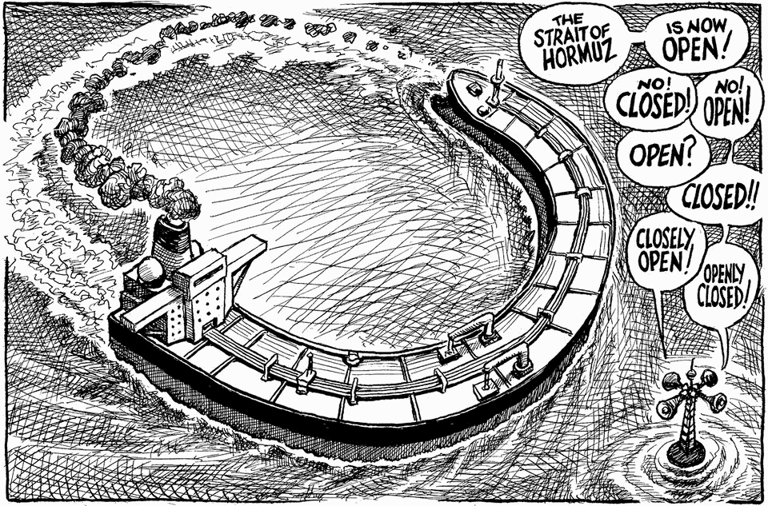

The world this week
Cartoon: Continuing uncertainty over the Strait of Hormuz
A lighter take on the news
July 16th 2026

Dig deeper into the subjects of this cartoon:
America’s president looks bereft of good options for solving the stand-off in the Gulf
But the stand-off also has costs for cash-strapped Iran
America’s other battle with Iran
You can see previous ones here.